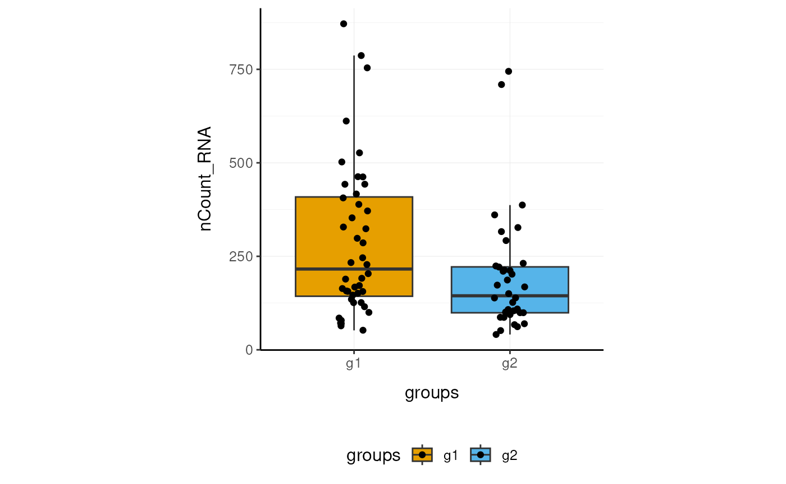

Overview of the tidySCE package
Stefano Mangiola
2020-09-04
introduction.Rmd

Brings SingleCellExperiment to the tidyverse!
website: stemangiola.github.io/tidySCE/
Please also have a look at
- tidyseurat for tidy manipulation of Seurat objects
- tidybulk for tidy high-level data analysis and manipulation
- nanny for tidy high-level data analysis and manipulation
- tidygate for adding custom gate information to your tibble
- tidyHeatmap for heatmaps produced with tidy principles
Functions/utilities available
| SingleCellExperiment-compatible Functions | Description |
|---|---|
all |
After all tidySCE is a SingleCellExperiment object, just better |
| tidyverse Packages | Description |
|---|---|
dplyr |
All dplyr APIs like for any tibble |
tidyr |
All tidyr APIs like for any tibble |
ggplot2 |
ggplot like for any tibble |
plotly |
plot_ly like for any tibble |
| Utilities | Description |
|---|---|
tidy |
Add tidySCE invisible layer over a SingleCellExperiment object |
as_tibble |
Convert cell-wise information to a tbl_df
|
join_transcripts |
Add transcript-wise information, returns a tbl_df
|
Installation
From CRAN (in submission)
install.packages("tidySCE")
From Github
devtools::install_github("stemangiola/tidySCE")
Create tidySCE, the best of both worlds!
This is a SingleCellExperiment object but it is evaluated as tibble. So it is fully compatible both with SingleCellExperiment and tidyverse APIs.
pbmc_small_tidy <- tidySCE::pbmc_small %>% tidy()
It looks like a tibble
pbmc_small_tidy## # A tibble: 80 x 17
## cell orig.ident nCount_RNA nFeature_RNA RNA_snn_res.0.8 letter.idents groups
## <chr> <fct> <dbl> <int> <fct> <fct> <chr>
## 1 ATGC… SeuratPro… 70 47 0 A g2
## 2 CATG… SeuratPro… 85 52 0 A g1
## 3 GAAC… SeuratPro… 87 50 1 B g2
## 4 TGAC… SeuratPro… 127 56 0 A g2
## 5 AGTC… SeuratPro… 173 53 0 A g2
## 6 TCTG… SeuratPro… 70 48 0 A g1
## 7 TGGT… SeuratPro… 64 36 0 A g1
## 8 GCAG… SeuratPro… 72 45 0 A g1
## 9 GATA… SeuratPro… 52 36 0 A g1
## 10 AATG… SeuratPro… 100 41 0 A g1
## # … with 70 more rows, and 10 more variables: RNA_snn_res.1 <fct>, file <chr>,
## # ident <fct>, PC_1 <dbl>, PC_2 <dbl>, PC_3 <dbl>, PC_4 <dbl>, PC_5 <dbl>,
## # tSNE_1 <dbl>, tSNE_2 <dbl>But it is a SingleCellExperiment object after all
pbmc_small_tidy@assays
## An object of class "SimpleAssays"
## Slot "data":
## List of length 2
## names(2): counts logcountsAnnotation polishing using tidyverse
We may have a column that contains the directory each run was taken from, such as the “file” column in pbmc_small_tidy. We may want to extract the run/sample name out of it. extract can be used to convert a character column into multiple columns using regular expression groups.
pbmc_small_polished <- pbmc_small_tidy %>% extract(file, "sample", "../data/([a-z0-9]+)/outs.+", remove = FALSE) pbmc_small_polished %>% select(sample, everything())
## # A tibble: 80 x 18
## cell sample orig.ident nCount_RNA nFeature_RNA RNA_snn_res.0.8 letter.idents
## <chr> <chr> <fct> <dbl> <int> <fct> <fct>
## 1 ATGC… sampl… SeuratPro… 70 47 0 A
## 2 CATG… sampl… SeuratPro… 85 52 0 A
## 3 GAAC… sampl… SeuratPro… 87 50 1 B
## 4 TGAC… sampl… SeuratPro… 127 56 0 A
## 5 AGTC… sampl… SeuratPro… 173 53 0 A
## 6 TCTG… sampl… SeuratPro… 70 48 0 A
## 7 TGGT… sampl… SeuratPro… 64 36 0 A
## 8 GCAG… sampl… SeuratPro… 72 45 0 A
## 9 GATA… sampl… SeuratPro… 52 36 0 A
## 10 AATG… sampl… SeuratPro… 100 41 0 A
## # … with 70 more rows, and 11 more variables: groups <chr>,
## # RNA_snn_res.1 <fct>, file <chr>, ident <fct>, PC_1 <dbl>, PC_2 <dbl>,
## # PC_3 <dbl>, PC_4 <dbl>, PC_5 <dbl>, tSNE_1 <dbl>, tSNE_2 <dbl>Preliminary plots
We can treat pbmc_small_polished effectively as a normal tibble for plotting.
Here we plot number of transcripts per cell
pbmc_small_polished %>% tidySCE::ggplot(aes(nFeature_RNA, fill=groups)) + geom_histogram() + my_theme

Here we plot total transcriptional material per cell
pbmc_small_polished %>% tidySCE::ggplot(aes(groups, nCount_RNA, fill=groups)) + geom_boxplot(outlier.shape = NA) + geom_jitter(width = 0.1) + my_theme

Here we plot abundance of two transcripts for each group
pbmc_small_polished %>% join_transcripts(transcripts = c("HLA-DRA", "LYZ")) %>% ggplot(aes(groups, abundance_counts + 1, fill=groups)) + geom_boxplot(outlier.shape = NA) + geom_jitter(aes(size=nCount_RNA), alpha=0.5, width = 0.2) + scale_y_log10() + my_theme

Preprocess the dataset
Also you can treat the object as SingleCellExperiment object and proceed with data processing.
variable_genes <- pbmc_small_polished %>% modelGeneVar() %>% getTopHVGs(prop=0.1) pbmc_small_pca <- pbmc_small_polished %>% runPCA(subset_row = variable_genes) pbmc_small_pca
## # A tibble: 80 x 18
## cell orig.ident nCount_RNA nFeature_RNA RNA_snn_res.0.8 letter.idents groups
## <chr> <fct> <dbl> <int> <fct> <fct> <chr>
## 1 ATGC… SeuratPro… 70 47 0 A g2
## 2 CATG… SeuratPro… 85 52 0 A g1
## 3 GAAC… SeuratPro… 87 50 1 B g2
## 4 TGAC… SeuratPro… 127 56 0 A g2
## 5 AGTC… SeuratPro… 173 53 0 A g2
## 6 TCTG… SeuratPro… 70 48 0 A g1
## 7 TGGT… SeuratPro… 64 36 0 A g1
## 8 GCAG… SeuratPro… 72 45 0 A g1
## 9 GATA… SeuratPro… 52 36 0 A g1
## 10 AATG… SeuratPro… 100 41 0 A g1
## # … with 70 more rows, and 11 more variables: RNA_snn_res.1 <fct>, file <chr>,
## # sample <chr>, ident <fct>, PC1 <dbl>, PC2 <dbl>, PC3 <dbl>, PC4 <dbl>,
## # PC5 <dbl>, tSNE_1 <dbl>, tSNE_2 <dbl>If a tool is not included in the tidySCE collection, we can use as_tibble to permanently convert tidySCE into tibble
pbmc_small_pca %>% as_tibble %>% select(contains("PC"), everything()) %>% GGally::ggpairs(columns = 1:5, ggplot2::aes(colour=groups)) + my_theme

Identify clusters
We proceed with cluster identification
pbmc_small_cluster <- pbmc_small_pca # Assigning to the 'colLabels' of the 'sce'. colLabels(pbmc_small_cluster) <- pbmc_small_pca %>% buildSNNGraph(use.dimred="PCA") %>% igraph::cluster_walktrap() %$% membership %>% as.factor pbmc_small_cluster %>% select(label, everything())
## # A tibble: 80 x 19
## cell label orig.ident nCount_RNA nFeature_RNA RNA_snn_res.0.8 letter.idents
## <chr> <fct> <fct> <dbl> <int> <fct> <fct>
## 1 ATGC… 2 SeuratPro… 70 47 0 A
## 2 CATG… 2 SeuratPro… 85 52 0 A
## 3 GAAC… 2 SeuratPro… 87 50 1 B
## 4 TGAC… 1 SeuratPro… 127 56 0 A
## 5 AGTC… 2 SeuratPro… 173 53 0 A
## 6 TCTG… 2 SeuratPro… 70 48 0 A
## 7 TGGT… 1 SeuratPro… 64 36 0 A
## 8 GCAG… 2 SeuratPro… 72 45 0 A
## 9 GATA… 2 SeuratPro… 52 36 0 A
## 10 AATG… 2 SeuratPro… 100 41 0 A
## # … with 70 more rows, and 12 more variables: groups <chr>,
## # RNA_snn_res.1 <fct>, file <chr>, sample <chr>, ident <fct>, PC1 <dbl>,
## # PC2 <dbl>, PC3 <dbl>, PC4 <dbl>, PC5 <dbl>, tSNE_1 <dbl>, tSNE_2 <dbl>Now we can interrogate the object as if it was a regular tibble data frame
pbmc_small_cluster %>% tidySCE::count(groups, label)
## # A tibble: 8 x 3
## groups label n
## <chr> <fct> <int>
## 1 g1 1 12
## 2 g1 2 14
## 3 g1 3 14
## 4 g1 4 4
## 5 g2 1 10
## 6 g2 2 11
## 7 g2 3 10
## 8 g2 4 5We can identify cluster markers using SingleCellExperiment
# Identify markers marker_genes <- pbmc_small_cluster %>% findMarkers(groups=pbmc_small_cluster$label) %>% as.list %>% map(~ .x %>% head(10) %>% rownames) %>% unlist # Plot heatmap pbmc_small_cluster %>% join_transcripts(transcripts = marker_genes) %>% group_by(label) %>% heatmap(transcript, cell, abundance_counts, .scale = "column")

Reduce dimensions
We can calculate the first 3 UMAP dimensions using SingleCellExperiment framework
pbmc_small_UMAP = pbmc_small_cluster %>% runUMAP(ncomponents = 3)
and we can plot them using 3D plot using plotly
pbmc_small_UMAP %>% plot_ly( x = ~`UMAP1`, y = ~`UMAP2`, z = ~`UMAP3`, color = ~ label, colors = friendly_cols[1:4] )

screenshot plotly
Cell type prediction
We can infer cell type identities using singleR
blueprint <- SingleR::BlueprintEncodeData() cell_type_df <- pbmc_small_UMAP@assays@data$logcounts %>% Matrix::Matrix(sparse = TRUE) %>% SingleR::SingleR( ref = blueprint , labels = blueprint$label.main, method = "single" ) %>% as.data.frame() %>% as_tibble(rownames="cell") %>% select(cell, first.labels)
pbmc_small_cell_type <- pbmc_small_UMAP %>% left_join(cell_type_df, by="cell") pbmc_small_cell_type %>% tidySCE::select(cell, first.labels, everything())
## # A tibble: 80 x 23
## cell first.labels orig.ident nCount_RNA nFeature_RNA RNA_snn_res.0.8
## <chr> <chr> <fct> <dbl> <int> <fct>
## 1 ATGC… CD4+ T-cells SeuratPro… 70 47 0
## 2 CATG… CD8+ T-cells SeuratPro… 85 52 0
## 3 GAAC… CD8+ T-cells SeuratPro… 87 50 1
## 4 TGAC… CD4+ T-cells SeuratPro… 127 56 0
## 5 AGTC… CD4+ T-cells SeuratPro… 173 53 0
## 6 TCTG… CD4+ T-cells SeuratPro… 70 48 0
## 7 TGGT… CD4+ T-cells SeuratPro… 64 36 0
## 8 GCAG… CD4+ T-cells SeuratPro… 72 45 0
## 9 GATA… CD4+ T-cells SeuratPro… 52 36 0
## 10 AATG… CD4+ T-cells SeuratPro… 100 41 0
## # … with 70 more rows, and 17 more variables: letter.idents <fct>,
## # groups <chr>, RNA_snn_res.1 <fct>, file <chr>, sample <chr>, ident <fct>,
## # label <fct>, PC1 <dbl>, PC2 <dbl>, PC3 <dbl>, PC4 <dbl>, PC5 <dbl>,
## # tSNE_1 <dbl>, tSNE_2 <dbl>, UMAP1 <dbl>, UMAP2 <dbl>, UMAP3 <dbl>We can easily summarise the results. For example, see how cell type classification overlaps with cluster classification.
pbmc_small_cell_type %>% count(label, first.labels)
## # A tibble: 11 x 3
## label first.labels n
## <fct> <chr> <int>
## 1 1 CD4+ T-cells 2
## 2 1 CD8+ T-cells 8
## 3 1 NK cells 12
## 4 2 B-cells 10
## 5 2 CD4+ T-cells 6
## 6 2 CD8+ T-cells 2
## 7 2 Macrophages 1
## 8 2 Monocytes 6
## 9 3 Macrophages 1
## 10 3 Monocytes 23
## 11 4 Erythrocytes 9We can easily reshape the data for building information-rich faceted plots
pbmc_small_cell_type %>% # Reshaping pivot_longer( cols=c(label, first.labels), names_to = "classifier", values_to = "label" ) %>% # Plotting ggplot(aes(UMAP1, UMAP2, color=label)) + geom_point() + facet_wrap(~classifier) + my_theme

We can easily plot gene correlation per cell category, adding multi-layer annotations
pbmc_small_cell_type %>% # Add mitochondrial abundance mutate(mitochondrial = rnorm(n())) %>% # Plot correlation join_transcripts(transcripts = c("CST3" , "LYZ"), shape = "wide") %>% ggplot(aes(CST3 +1, LYZ + 1, color=groups, size=mitochondrial)) + geom_point() + facet_wrap(~first.labels, scales = "free") + scale_x_log10() + scale_y_log10() + my_theme

Nested analyses
A powerful tool we can use with tidySCE is nest. We can easily perform independent analyses on subsets of the dataset. First we classify cell types in lymphoid and myeloid; then, nest based on the new classification
pbmc_small_nested <- pbmc_small_cell_type %>% filter(first.labels != "Erythrocytes") %>% mutate(cell_class = if_else(`first.labels` %in% c("Macrophages", "Monocytes"), "myeloid", "lmphoid")) %>% nest(data = -cell_class) pbmc_small_nested
## # A tibble: 2 x 2
## cell_class data
## <chr> <list>
## 1 lmphoid <tidySCE>
## 2 myeloid <tidySCE>Now we can independently (i) find variable features, (ii) reduce dimensions, and (iii) cluster. Using both tidyverse and SingleCellExperiment seamlessy
pbmc_small_nested_reanalysed <- pbmc_small_nested %>% mutate(data = map( data, ~ { .x = runPCA(.x, subset_row = variable_genes ) variable_genes = .x %>% modelGeneVar() %>% getTopHVGs(prop=0.3) colLabels(.x) = .x %>% buildSNNGraph(use.dimred="PCA") %>% igraph::cluster_walktrap() %$% membership %>% as.factor .x %>% runUMAP(ncomponents = 3) } )) pbmc_small_nested_reanalysed
## # A tibble: 2 x 2
## cell_class data
## <chr> <list>
## 1 lmphoid <tidySCE>
## 2 myeloid <tidySCE>Now we can unnest and plot the new clasification
pbmc_small_nested_reanalysed %>% # Convert to tibble otherwise SingleCellExperiment drops reduced dimensions when unifying data sets. mutate(data = map(data, ~ .x %>% as_tibble)) %>% unnest(data) %>% # Define unique clusters unite("cluster", c(cell_class, label), remove=FALSE) %>% # Plotting ggplot(aes(UMAP1, UMAP2, color=cluster)) + geom_point() + facet_wrap(~cell_class) + my_theme

We can perform a large number of functional analyses on data subsets. For example intra-sample cell-cell interactions, for then comparing/testing whether interactions have strenghten/weaken across conditions. In this small dataset we have just two sample (one for condition) but you can imagine how you can use tidyverse to perform t-tests and visualisation.
pbmc_small_nested_interactions <- pbmc_small_nested_reanalysed %>% # Unnest based on cell category unnest(data) %>% # Create unambiguous clusters mutate(integrated_clusters = first.labels %>% as.factor %>% as.integer) %>% # Nest based on sample tidySCE::nest(data = -sample) %>% tidySCE::mutate(interactions = map(data, ~ { # Produce variables. Yuck! cluster = .x@colData$integrated_clusters data = data.frame(.x@assays@data %>% as.list %>% .[[1]] %>% as.matrix) # Ligand/Receptor analysis using SingleCellSignalR data %>% cell_signaling(genes=rownames(data),cluster=cluster) %>% inter_network(data = data, signal = ., genes = rownames(data), cluster = cluster) %$% `individual-networks` %>% map_dfr(~bind_rows(as_tibble(.x))) })) pbmc_small_nested_interactions %>% select(-data) %>% unnest(interactions)
If the data set was not so small, and interactions could be identified, you would see something as below.
## # A tibble: 100 x 9
## sample ligand receptor ligand.name receptor.name origin destination
## <chr> <chr> <chr> <chr> <chr> <chr> <chr>
## 1 sampl… clust… cluster… PTMA VIPR1 clust… cluster 2
## 2 sampl… clust… cluster… B2M KLRD1 clust… cluster 2
## 3 sampl… clust… cluster… IL16 CD4 clust… cluster 2
## 4 sampl… clust… cluster… HLA-B KLRD1 clust… cluster 2
## 5 sampl… clust… cluster… CALM1 VIPR1 clust… cluster 2
## 6 sampl… clust… cluster… HLA-E KLRD1 clust… cluster 2
## 7 sampl… clust… cluster… GNAS VIPR1 clust… cluster 2
## 8 sampl… clust… cluster… B2M HFE clust… cluster 2
## 9 sampl… clust… cluster… PTMA VIPR1 clust… cluster 3
## 10 sampl… clust… cluster… CALM1 VIPR1 clust… cluster 3
## # … with 90 more rows, and 2 more variables: interaction.type <chr>,
## # LRscore <dbl>